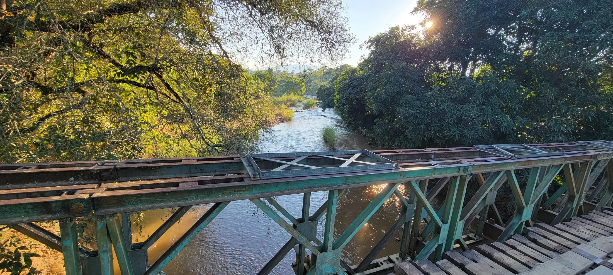

Hydrological modelling
Rainfall–runoff, design floods and catchment water balance, from small culverts to whole river basins.
Water · People · Resilient Future
I am Eng. Leonard Richard Maketa, a Senior Hydrologist, Water Resources Engineer and GIS Expert based in Dar es Salaam. I model rivers, floods and catchments across Tanzania so that infrastructure is sized for real rainfall, real rivers and a changing climate.

About
I am a registered Professional Engineer specialising in hydrology, hydraulic modelling, geospatial analysis and climate-resilient infrastructure. My work sets the design floods, waterway openings and drainage that roads, bridges, airstrips, dams, irrigation schemes and towns depend on.
I have delivered hydrology for TANROADS road and bridge programmes, World Bank TACTIC urban investments, a trans-boundary flood early warning system, and irrigation and dam schemes across Tanzania. Alongside consulting, I am a PhD researcher at the University of Dar es Salaam, studying how surface water and groundwater interact in the Katuma River catchment.
Expertise
Each assignment goes from field survey and data to a calibrated model and a design you can build from.
Rainfall–runoff, design floods and catchment water balance, from small culverts to whole river basins.
Bridge waterway adequacy, scour, culvert sizing and flood inundation mapping in 1D and 2D.
Soil loss, sediment yield and gully mapping to protect catchments, reservoirs and roads.
Catchment delineation, terrain and land cover analysis, field GNSS surveys and finished maps.
Downscaled climate scenarios, irrigation and dam feasibility, and integrated water resources planning.
Hydrological design memoranda, feasibility and design reports, drawings and tender documents.
Models & maps
Click any panel to see it full size.
Field work
Selected assignments with photos from site visits and the models built from them.
Team Leader for the local consultant within an international project team, moving the Makambako, Wanging'ombe and Rujewa water supply schemes from grid electricity to solar power for a 24-hour supply.
Hydrological and hydraulic survey and drainage design for the 17.1 km road from Kisangara to the Nyumba ya Mungu dam in Mwanga District. A DEM-based catchment analysis and a field survey of 20 sites defined 31 drainage structures, including a new 15 m bridge, all checked for the 100-year flood with a climate change allowance.
Hydrological and hydraulic study to replace a box culvert under the Mahale airstrip, near Lake Tanganyika, that was washed out by floodwater.
Design review for the rehabilitation and upgrading of Lake Manyara Airport, with additional works at the Kaboni site and the Mto Athumani Bridge: catchment hydrology, design floods and sizing of airport drainage and hydraulic structures.
Design review and construction supervision after flood damage in Arusha, Tanga, Kilimanjaro, Dodoma, Manyara, Morogoro, Dar es Salaam, Lindi, Pwani and Mtwara, with hydrological checks on every culvert and bridge.
Feasibility, ESIA and detailed design to bitumen standard, including HEC-RAS modelling of the 70 m Sukuma Bridge over the Simiyu River and sizing of every crossing along the route.
Steady and unsteady HEC-RAS models that size bridge waterways, check scour and freeboard, and map flood depth and velocity, as on the Kogatende Bridge over the Mara River in Serengeti National Park.
Every design starts with a site visit: flood marks, channel shape, bed material, erosion and how people use the river. These observations calibrate the models and catch what maps miss.
Project record
Hydrology and water resources work for road agencies, development partners, parks, utilities and research programmes.
| Project | Client | Year | Field |
|---|---|---|---|
| Solar power plant for the Wanging'ombe water supply (Team Leader, local consultant)Ongoing | WANG'I WASA | 2026 | Energy |
| Katoma – Kanyigo – Bukwali Road, Kagera: hydrology and drainage designOngoing | — | 2026 | Roads |
| Kisangara – Nyumba ya Mungu Road (17.1 km), Kilimanjaro: drainage designOngoing | TANROADS | 2026 | Roads |
| Mahale National Park airstrip culvert: hydrology and hydraulicsOngoing | TANAPA | 2026 | Airstrips |
| Dodoma outer ring road addendum: Mkonze – Ntyuka – Chimwaga – Nanenane (26 km)Ongoing | TANROADS | 2026 | Roads |
| Naitolia Restoration Model: soil erosion and gully mapping, MonduliOngoing | IRA UDSM / Tanzania Partnership Program | 2026 | Environment |
| Lake Manyara Airport, Kaboni site and Mto Athumani Bridge design reviewOngoing | TANROADS | 2025–26 | Airstrips |
| Emergency road works, design review and supervision in 10 regionsOngoing | TANROADS | 2025–26 | Roads |
| TACTIC Tier 3, Zone 6: Vwawa, Tunduma and Kasulu townsOngoing | World Bank Tanzania | 2025–26 | Urban |
| TACTIC Tier 3, Zone 1: Handeni, Bagamoyo and Ifakara townsOngoing | World Bank Tanzania | 2025–26 | Urban |
| Ubena Junction – Lugoba Road upgrading (30.75 km)Ongoing | TANROADS | 2025–26 | Roads |
| Bariadi – Salama – Ng'haya – Magu Road (76 km), incl. 70 m Sukuma BridgeOngoing | TANROADS HQ | 2024–26 | Roads |
| Nangombo – Chiwindi (39.4 km) and Mbinga – Litembo – Mkiri (22 km) roads, route selection (~525 km)Ongoing | TANROADS HQ | 2024–26 | Roads |
| Munguri B Bridge and Kondoa Bridge, Kondoa – Mtiriangwi / Gisambalang RoadOngoing | TANROADS HQ | 2024–26 | Bridges |
| Flood early warning system, Songwe River Basin (Tanzania and Malawi), Project CoordinatorOngoing | Songwe River Basin Commission | 2022–26 | Flood warning |
| TACTIC Zone 1: Arusha, Dodoma, Tabora and KigomaOngoing | World Bank Tanzania | 2021–26 | Urban |
| Her Resilience Our Planet: hydrological baseline survey | CARE Tanzania | 2025 | Climate |
| Kogatende Bridge topographic and bathymetric survey and hydrology study, Serengeti | TANAPA / SEDCP-II | 2025 | Bridges |
| Pugu Kwa Mjesa telecommunications tower: drainage risk assessment | Minara Tanzania | 2024–25 | Drainage |
| TACTIC Tier 2, Zone 3: Bukoba, Musoma and Bariadi municipalities | World Bank Tanzania | 2024–25 | Urban |
| TACTIC Zone 1: Tanga, Korogwe and Moshi councils | World Bank Tanzania | 2024–25 | Urban |
| Ngono Irrigation Scheme: feasibility study and detailed design | Government of Tanzania | 2023–24 | Irrigation |
| Makondeko Irrigation Scheme, Tandahimba: feasibility study and detailed design | Government of Tanzania | 2023–24 | Irrigation |
| Ngomai dams and irrigation scheme, Kongwa: feasibility study and detailed design | Government of Tanzania | 2023–24 | Dams |
| Dirim – Tumati – Dongobesh dams and irrigation scheme, Mbulu | Government of Tanzania | 2023–24 | Dams |
| 2 MW solar farm pre-feasibility at Zuzu, Mugumu and Nachingwea: site hydrology and flood risk | Private solar developer | 2023–24 | Energy |
| Standard Gauge Railway Lots 3 and 4 EIA, Makutupora – Isaka | SGR Project | 2022 | EIA |
| Kiwira water supply: design review and construction supervision | Water authority | 2022 | Water supply |
| Lake Victoria Basin integrated water resources management and development plan | Lake Victoria Basin Commission | 2022 | IWRM |
| Mama Samia Suluhu Hassan Industrial Park, Mlandizi: stormwater drainage | Government of Tanzania | 2022 | Drainage |
| BRrAIC: Building River Resilience through an Integrated Approach under Climate Change | University of Dar es Salaam | 2021–22 | Research |
| Malagarasi Bridge, international crossing Kilelema (TZ) – Buhema (Burundi) | TANROADS | 2020 | Bridges |
| Songea Bypass (12.9 km): review and update of detailed design | TANROADS | 2020 | Roads |
| Mpanda – Ugalla – Kaliua – Ulyankulu – Kahama Regional Road (456 km) | TANROADS | 2020 | Roads |
| Mkulazi I sugarcane estate and factory: irrigation water and drainage | Mkulazi Holding Co. | 2020 | Irrigation |
| Dar es Salaam BRT Phase 5 depot: stormwater drainage design | TANROADS HQ | 2019 | Drainage |
| Dareda – Dongobesh Regional Road upgrading (60 km) | TANROADS Manyara | 2019 | Roads |
| Banana – Kitunda – Kivule – Msongola Road, Kitunda – Kivule section design review | TANROADS | 2019 | Roads |
| Morogoro Road widening to six lanes, Kimara – Kiluvya (16.2 km), incl. Kibamba, Kiluvya and Mpiji bridges | TANROADS | 2018 | Roads |
| Koga Bridge (120 m span), Tabora – Mpanda: design flood, scour and waterway | TANROADS | 2018 | Bridges |
| Shabiby – Arusha roundabout (5 km) and Chimwaga – Chinyoya – Kikuyu (11 km) roads, Dodoma | TANROADS | 2018 | Roads |
| Sengerema – Nyehunge – Kahunda and linked roads (116 km), Lake Victoria region | TANROADS | 2018 | Roads |
| Nahumi Bridge (20 m span), Mtwara | TANROADS | 2018 | Bridges |
| Isyonje – Kikondo – Makete Regional Road (96.2 km) | TANROADS | 2018 | Roads |
| Road projects in Kinondoni Municipality, Dar es Salaam | TARURA | 2017 | Roads |
Research & education
All three degrees are from the University of Dar es Salaam, from soil erosion to streamflow to groundwater.
Investigating surface and groundwater interactions in the Katuma River catchment, Tanzania
Linking river flow, groundwater levels and boreholes to understand how the Katuma River and its aquifers sustain each other.
Impacts of climate and land use / cover changes on streamflow in the Katuma catchment
SWAT modelling with downscaled climate scenarios and land cover change to project future river flows.
Assessment of soil erosion in the Ngerengere catchment using the RUSLE model
GIS-based soil loss mapping for the catchment that supplies water to Morogoro and Dar es Salaam.
Training
Practical courses for engineers, scientists, students and government teams, built on real Tanzanian data and ending with a finished model or map.
Maketa GIS Solution is my independent practice for GIS consulting, catchment mapping and training.
@maketa_gis_solutionLeadership & service
Engineers Registration Board and Ministry of Works. Coordinated Tanzania's largest engineering conference, with over 4,000 delegates.
Zanzibar, October 2023. Managed abstracts, speaker coordination and the conference programme.
A collaboration with the Milwaukee School of Engineering (USA) and UDSM. Led coordination and data collection on the ground.
Contact
Hydrology and hydraulics for roads and bridges, flood studies, water resources, GIS mapping or training. Call or email and I will reply directly.